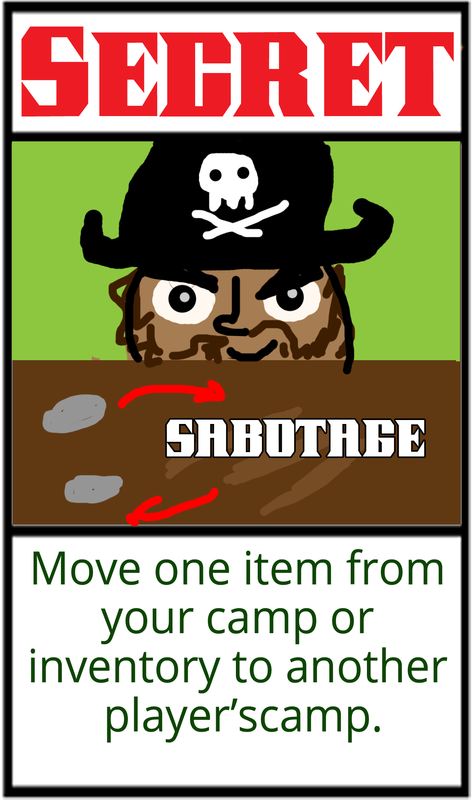
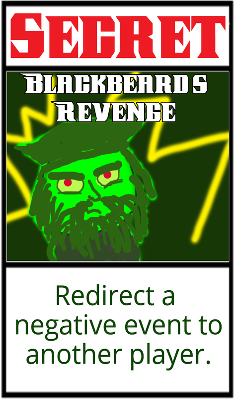

May 2016


You are a pirate and your ship has crashed! The remaining crew suspects the captain has met with Davy Jones at the bottom of the sea. A new captain must be elected. You know that if you impress your fellow crew mates then surely they will vote for you as the new captain! Play with up to three other scallywags to decide which one of you is worthy to be the next captain of the ship!